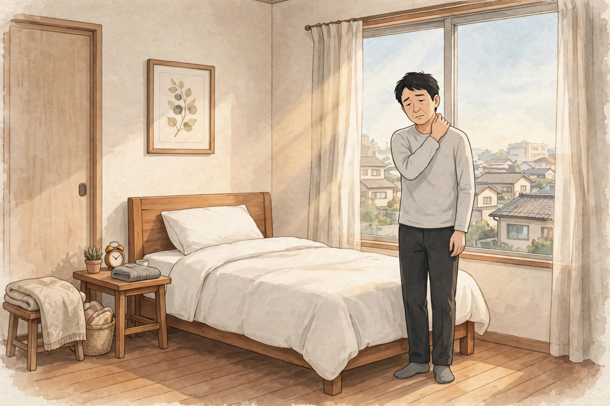

東三国で朝に気になる首こりと肩の重さ｜男性の起き抜けの過ごし方とセルフケア、受診の目安
男性の起き抜けの過ごし方とセルフケア、受診の目安

「朝、目が覚めたときから首がこわばっていて、振り向くような動きがしづらい」「肩の上に重さが乗っているような感じで、起きてしばらく首から肩がすっきりしない」「寝たはずなのに、朝から首と肩が重だるい」。東三国や新大阪、淀川区周辺で働く男性から、朝の首こりと肩の重さにまつわるこうした声を聞くことがあります。朝の首や肩の感じ方や背景は人によって異なり、一つの原因だけで説明できるものではありません。この記事では原因を断定するのではなく、朝に気になる首こりと肩の重さについての一般的な考え方と、考えられる要因、起き抜けの過ごし方と日常で試せるセルフケア、医療機関に相談したほうがよい目安をまとめます。同じ朝の場面でも肩こりを中心に扱った朝の肩こりと首の重さについてのコラムや、腰まわりに絞った朝に気になる腰の重さについてのコラム、目の疲れ感に絞った朝に気になる目の疲れ感についてのコラム、仕事帰りの場面に絞った仕事帰りの首こりと頭の重さについてのコラムとは視点を分け、ここでは「起き抜け」という場面と「首こり・肩の重さ」に焦点を当てます。お悩み別のページでも首こり・頸部痛や肩こりとしてまとめています。
朝の首こりと肩の重さとは：起き抜けに感じやすい、首のこわばりと肩の重だるさ
一般に「首こり」と呼ばれる感覚は、首まわりがこわばる、首を動かし始めるときに張りを感じる、後頭部から首の付け根が重だるい、などとして自覚されることが多いとされています。「肩の重さ」も同様に、肩の上に何か乗っているような重だるさや、肩まわりの張りとして感じられることがあります。朝の起き抜けは、眠っているあいだ同じ姿勢が続いたあとの動き出しのタイミングで、「起きた直後がいちばん気になり、体を動かすうちに徐々に気にならなくなる」「午前中のあいだずっと残る感じがする」「首は気にならない日でも、肩だけ重い日がある」など、出方は人それぞれです。まずは「起きてから何分ほどが一番気になるか」「首と肩のどちらが強いか」「どんな日の朝に強く感じるか（睡眠が短い日、枕を替えた日、夜更かしした日など）」を自分の言葉で整理しておくと、起き抜けの過ごし方の見直しやセルフケアの選び方、専門家に相談するときの伝え方がスムーズになります。首こりや肩の重さとあわせて、頭の重さや目の疲れ感、眠りの浅さを感じる場合もあり、前日の過ごし方から朝までの流れ全体を振り返ってみることも一つの手がかりになります。
考えられる要因の整理
朝の首こりや肩の重さを意識する背景には、枕や寝姿勢といった眠る環境の側の条件に、前日の姿勢や疲れの残り方、睡眠の様子などが重なっている場合があります。以下は代表的なものとして挙げられる要因ですが、当てはまるかどうかや程度は人によって異なります。
首こりと肩の重さと重なって自覚されやすい部位の位置は、図1のとおりです。

朝の首こりも、首そのものだけでなく、後頭部や首の前側を通る胸鎖乳突筋、首の付け根から肩にかけての張りと重なって自覚されることが多いとされます。頭の重さを支える首まわりは、眠っているあいだの姿勢の影響を受けやすい部位です。位置は目安です。
- 枕の高さ・硬さと、首の支え方：枕が高すぎると首が前に押し出されたまま、低すぎると頭が下がったままの姿勢で支えられ続け、首から肩にかけての筋肉に力が入りっぱなしになる場合があります。枕を替えた時期と朝の感じ方が重なる、バスタオルで高さを調整したら朝の様子が違った、と話す方もいます。首の後ろの隙間が支えられているかどうかも、見直しの材料になります。
- 寝姿勢の偏りと、寝返りの少なさ：うつ伏せで首を横に向けた姿勢や、同じ向きの横向きが長く続くと、首や肩の一部に負担が偏る場合があります。寝返りが少ない夜ほど朝のこわばりを感じやすい、眠りが浅い夜は寝姿勢も偏りやすい、と話す方もいます。
- 寝る前の画面時間と、うつむき姿勢の持ち越し：布団の中でスマートフォンを見る時間が長いと、首を前に傾けた姿勢が就寝直前まで続き、そのまま眠りについて朝の首の張りとして意識される場合があります。前日のデスクワークで首や肩まわりの緊張が残っている日は、夜の姿勢の積み重ねと重なって自覚される場合もあります。
- 就寝中の冷えと、寝室の温度・寝具の合わなさ：冷房の風が首や肩に当たり続ける、季節の変わり目に掛け布団やパジャマが気温に合っていないなどが重なると、朝の首まわりの冷えや重さを意識しやすい場合があります。肩まわりが出たまま眠ってしまう寝姿勢も、冷えと重なって感じられることがあります。
- 睡眠時間の短さや眠りの浅さ、前日の疲れの持ち越し：睡眠が短い日や眠りが浅い日が続くと、全身の疲労感とあわせて、朝の首こりや肩の重さを意識しやすい、と話す方もいます。残業が続いた週や、休日の寝だめで睡眠のリズムがずれた週明けに感じる、という声もあります。
- 寝ているあいだの食いしばり・歯ぎしり：眠っているあいだの食いしばりで顎や首まわりの筋肉に力が入り続けると、朝に首から肩にかけての張りとして自覚される場合があります。起きたときに顎のだるさを感じる方は、この面も気にしてみてください。
- 体そのものの側の要因の可能性：首の重さや痛みの背景には、頸椎の状態や血圧の変動など、体の側の要因が関わる場合もあります。「寝方だけの問題」と決めつけないことは、受診の目安とあわせて押さえておきたい点です。
起き抜けの過ごし方と、日常で試せるセルフケア
朝の起き抜けの短い時間に試せるものと、前日の夜に見直せるものを中心にまとめました。首はデリケートな部位です。強い力で押したり、勢いをつけて回したりはせず、痛みやしびれなど様子の変化があるときは無理をしないでください。気になる様子が強いときは、セルフケアより先に医療機関への相談をご検討ください。
- 起き抜けは布団の中で小さく動き出す：目が覚めたらすぐ起き上がらず、仰向けのまま首を左右へ小さく動かす、肩をすくめてストンと落とす、あごを軽く引くなど、小さな動きから始める方法です。いきなり首を大きく回さず、こわばりがゆるむのを待ってから起き上がる方もいます。
- 首をゆっくり倒す：背筋を伸ばして座り、頭を片側へゆっくり倒して、首の横側が心地よく伸びるところで数呼吸止めます。手は頭の横に軽く添える程度にし、引っぱらない範囲で行ってください（手順は図2）。反対側も同じように行い、痛みを感じる方向には無理に倒さないでください。
- 温かいタオルや朝のシャワーで首・肩まわりを温める：起き抜けに、温めたタオルを首の後ろや肩に数分当てる、朝のシャワーで首から肩にかけて温水を当てる、といった温め方の見直しです。熱すぎない温度で、気持ちよいと感じる範囲にとどめてください。
- 肩回しと肩甲骨を寄せる動き：両手の指先を肩に置き、肘で円を描くようにゆっくり回す、両腕を下げたまま肩甲骨同士を寄せるように動かす、など肩まわり全体を動かす短い動きです。洗顔や着替えの前後に取り入れる方がいます。
- 枕の高さと寝具を見直す：仰向けで寝たときに首の後ろの隙間が支えられ、頭が高すぎたり沈みすぎたりしない高さかどうかを確認する、バスタオルで少しずつ高さを調整する、寝返りがしやすい寝具を選ぶ、など眠る環境側の見直しです。一度に大きく変えず、数日単位で様子を見ながら調整する方がいます。
- 寝る前の過ごし方に区切りをつける：布団に入ってからのスマートフォン時間に区切りをつける、寝る前に首や肩を軽く動かしておく、寝室の温度と寝具を季節に合わせる、など前日の夜の過ごし方の見直しです。うつむき姿勢が続いた日は、とくに意識する方がいます。
- 朝の光・水分・軽い歩行で体を起こす：起きたらカーテンを開けて光を浴びる、水分をとる、通勤のときに一駅分歩くなど、朝の体のリズムを整える工夫です。日中に体を動かす機会があると、夜の眠りや翌朝の感じ方にも関わる、とされています。

①背筋を伸ばして座る（立つ） ②頭を片側へゆっくり倒し、手を頭の横に軽く添える ③首の横側が心地よく伸びるところで数呼吸止め、反対側も同じように行う、が基本の流れです。力を入れて引っぱったり、勢いをつけたりしないでください。
セルフケアは一度に全部をやろうとせず、起き抜けに続けられそうなものを一つ選ぶところから始めるのがおすすめです。感じ方には個人差があり、前日の仕事内容や睡眠、その日の気温によっても変わりますので、無理のない範囲で行ってください。市販薬などを使う場合は、用法・用量や対象を商品の表示で確認し、頼る日が長く続くときは専門家への相談もご検討ください。
医療機関への受診を考える目安
次のような様子がある場合は、セルフケアや当院でのケアの前に、整形外科や内科、神経内科などの医療機関への相談をご検討ください。当院は医療機関ではなく、症状の診断や治療は行いません。「寝違えただけだろう」と思っていても、背景にほかの原因が関わる場合があります。特に、今までにない痛みや、ほかの症状を伴う場合は、朝の場面にかかわらず早めの相談が大切です。
- 首がほとんど回らないほどの強い痛みがある、日に日に痛みが強くなっている
- 腕や手にしびれや力が入りにくい感じがある、細かい動作がしづらい
- 発熱や強い頭痛、めまいや吐き気を伴っている
- 転倒や事故など、首に強い衝撃を受けたあとから症状が出ている
- 朝のこわばりが数週間以上続き、よくなる様子がない
- 夜中に痛みで目が覚める、安静にしていても痛みが続く
上記に当てはまらなくても、気になる様子が続くときは、早めに医療機関や専門家へ相談することが大切です。自己判断だけで様子を見続けないことも一つの目安になります。
北辰堂のご案内
北辰堂は、大阪市淀川区東三国二丁目にある男性専用の整体院です。施術歴30年の平賀伸人（鍼灸師・国家資格）が、整体とリラクゼーションを行います。当院では鍼灸施術は行いません。営業は平日・土曜17:00〜22:00、日曜10:00〜22:00の完全予約制です。朝の首こりや肩の重さが気になる方は、仕事帰りの平日・土曜の夕方や、日曜の時間帯に、枕や寝姿勢、前日の過ごし方も含めてご相談いただけます。プライバシーへの配慮のため、詳しい住所はご予約確定後にLINEでご案内します。
料金は60分 初回2,000円／2回目以降6,000円、90分 初回3,000円／2回目以降9,000円で、お支払いは現金のみです。施術を受けたからといって体の状態がどうなるかをお約束することはできませんが、その日の体の状態を確認しながら、首や肩の重さだけでなく姿勢全体の様子も見て、ゆっくり体を預けられる時間をご用意しています。枕の高さや寝る前の過ごし方など、日常で気になっていることも、カウンセリングの際にお聞かせください。気になるお悩みの例はお悩み別一覧にもまとめています。
コースの内容はメニュー・料金、施術者は施術者について、ご予約の流れは当日の流れとLINE予約の下書きづくり、場所についてはアクセスをご覧ください。あわせて朝の肩こりと首の重さについてのコラムや仕事帰りの首こりと頭の重さについてのコラム、週末の首こりについてのコラム、朝に気になる腰の重さについてのコラム、よくある質問もご参考ください。
ほかのコラム記事
関連するお悩みページ
ご予約・ご相談はLINEから
東三国・新大阪・淀川区周辺で、体のケアの相談先をお探しの方は、LINE公式アカウント（北辰堂）からお気軽にご連絡ください。現在の状態をお聞きしたうえで、施術の進め方をご案内します。
LINEで予約する